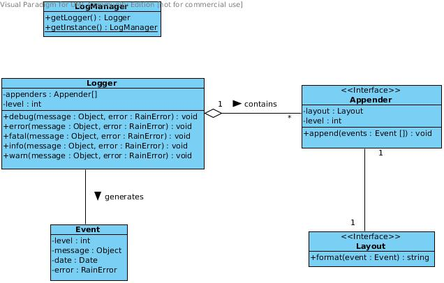

A vital feature for a distributed platform is a logging system that allows developers to easily inspect and debug live deployments. RAIN provides a logging system created not only to serve the platform’s needs but also the custom needs of component developers. It’s architecture is inspired by the successful log4x library. Reasons for this choice include general programmer familiarity with the library and a proven design. Features of RAIN’s logging system include: custom component loggers, useful appenders and layouts provided off-the-shelf, support for defining custom appenders and layouts, complete JSON-based configuration.
The logging system is comprised of loggers, appenders and layouts. Connecting these together through configuration gives developers great flexibility in specifying their output targets. Mixins are provided that developers can use for creating custom implementations for appenders or layouts. In addition, several implementations are provided by the platform. RAIN provides one platform logger and developers have the possibility of extending it through a component logger for their particular needs. In this way there is only one logger, but it can have an extended set of appenders for each component.
Note
Component loggers always extend the platform logger so any message logged at component level also gets logged at platform level.
RAIN’s logging system defines 5 log levels. From the weakest to the strongest, these are:
- DEBUG
- INFO
- WARN
- ERROR
- FATAL
Here is an overview of the interfaces and classes available as part of the logging system. They will be detailed in the following sections.
As mentioned, configuring the logging system is possible at both the server (server.conf.default) and component (meta.json) levels. The server configuration specifies the platform logger and at component level developers can extend it with custom appenders and layouts available to their component only.
Configuration is done inside the logger key. We will first see a complete example to get familiar with the available options and then describe each component of the logging system in detail. This is how a platform logger would be defined in the server.conf.default file:
// ...
logger: {
level: 'info',
appenders: [{
type: 'console',
layout: {
type: 'pattern',
params: {
'pattern': '%date %-5level %20.20logger - %message'
}
}
}]
}
The configuration specifies a platform logger that only logs messages having an INFO or above level. The only appender the logger has is a console appender which uses a pattern layout. The console appender as well as the pattern layout are provided by the platform.
Extending the platform logger for a component that needs a custom appender is easily achieved through a similar configuration inside the component’s meta.json file:
// ...
logger: {
appenders: [{
level: 'error',
type: 'file',
layout: {
type: 'pattern',
params: {
pattern: '%date - %message%newline%stacktrace'
}
},
params: {
file: 'logs/error.log'
}
}]
}
This component logger configuration extends the platform logger with a file appender that only logs messages having an ERROR level or above. The versatile pattern layout is used again, but notice the appender params key. Some appenders define custom parameters such as in this case where the log file path is specified.
An important observation is that the appenders themselves may have a level defined (as was done with the file appender in the example above). This level acts as a threshold for that particular appender, filtering out messages that have a lower level.
Moreover, component logger configurations aren’t allowed to redefine the general logger level, because this setting must only be configurable by the platform administrator.
Note
Any appender that doesn’t have a level specified will inherit the platform logger level. This behavior is usually not desired for custom component appenders, because it means the logging level may fluctuate as the platform administrator tweaks the general level setting. It is thus usually best to define levels for all custom component appenders.
Logging an INFO message with this example component logger will send the message to the platform console appender, since that one inherits the level from the logger, but it will not send it to the component file appender, since that one has a level threshold of ERROR. Naturally, logging an ERROR or FATAL message will send it to both appenders.
RAIN’s logging system supports one platform logger and multiple component loggers, with only one logger being available per component. The component loggers extend the platform logger with custom appenders so at any time there is only one logger visible to the running code, be it the platform logger for server code or a particular component logger for that component’s code.
The logger configuration object supports the following properties:
| Property | Description |
|---|---|
| level | Optional property. Log level value that will be inherited by all appenders that don’t specify a level. Only valid for the platform logger definition. |
| appenders | Optional property. Array of appenders. For component loggers, these are added to the list provided by the platform logger. |
An appender defines an output target. Any number of appenders may be defined for a logger. Appender configuration objects support the following properties:
| Property | Description |
|---|---|
| level | Optional property. Threshold level below which messages are not logged by this appender. Acts as a basic filter. If not specified, it will be inherited from the platform logger level. |
| type | Required property. One of the predefined appender types or a path to a module implementing the Appender interface inside the server folder of the current component if configuring a component logger. |
| layout | Optional property. Layout configuration object for this appender. |
| params | Optional property. Specific configuration parameters for this appender. |
The logging system defines a set of common appenders that can be used directly. These are summarized in the following table:
| Appender | Description |
|---|---|
| console | Logs to the standard output. |
| colored-console | Logs to the standard output using configurable colors. |
| file | Logs to a file. |
A layout describes the format of the message that is output by the appender. Only one layout may be defined per appender. Layout configuration objects support the following properties:
| Property | Description |
|---|---|
| type | Required property. One of the predefined layout types or a path to a module implementing the Layout interface inside the server folder of the current component if configuring a component logger. |
| params | Optional property. Specific configuration parameters for this layout. |
The logging system defines a set of common layouts that can be used directly. These are summarized in the following table:
| Layout | Description |
|---|---|
| simple | Consists of the message level, followed by a dash and the messsage itself, e.g. DEBUG - Module loaded. |
| pattern | Supports a comprehensive list of placeholders that can be combined to assemble a message containing information exposed by the platform, by the environment or by the logging event. Some possible placeholders are: %date, %level, %logger, %message, %newline, %exception, %stacktrace, %session{key}, %sid, %request{key}. Format modifiers like justification, minimum and maximum width are also supported. For example, %-5level specifies right padding with spaces if width is less than 5 characters, %20.20logger specifies default (left) padding with spaces if logger name is shorter than 20 characters, and a truncation of the name if it is larger than 20 characters. |
The logging system was built with the objective that logging should be centralized. In this regard, client side specific appenders aren’t supported. However, client side code is as important as server side code, so it is useful to give developers access to the logging system on the client side. The solution is to log all messages to the server side, regardless of their origin.
RAIN should open a websocket channel for sending logging events originating on the client to the server. The pattern layout makes it easy to separate messages from the client and server by providing a placeholder for this use.